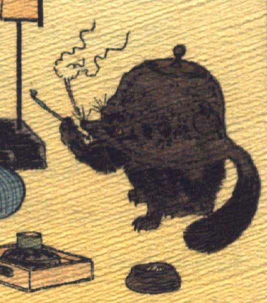

煙管を吸う文福茶釜。茶釜の正面中央がタヌキの顔になっている。突き出た鼻にひげが生え、目玉の上から長い眉毛が飛び出ている。茶釜の後方にふさふさとした尻尾が生えている。釜の下部は狸の下半身になっている。右前脚で煙管を持ち、鼻先から煙を出している。手前に煙草盆が置かれている。
著作者：Jules Adam／出典：親書誌：U426_nichibunken_0119：La bouillotte du bonheur／日付：2006／資源識別子：U426_nichibunken_0119_0006_0000
Copyright (c)2010- International Research Center for Japanese Studies, Kyoto, Japan. All rights reserved.